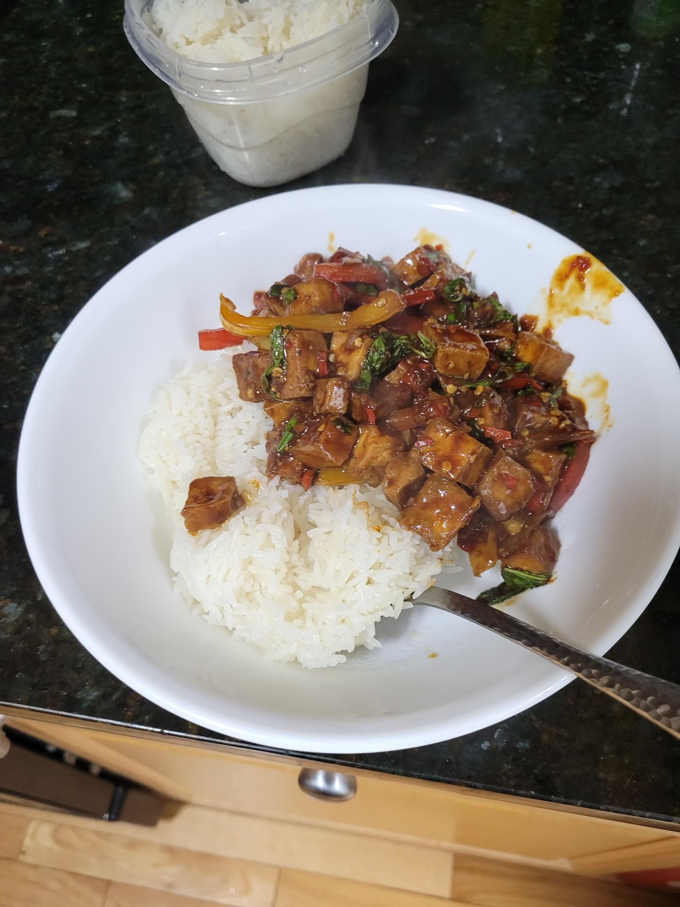

Kaprow

Description
A Thai dish featuring thai basil with fried tofu and bell pepper. We add plenty of thai chiles as well to bring up the spice level to our desired taste. This dish is high in protein and a goes best with short grain rice.
Ingredients
- Short grain rice
- Extra firm tofu
- Garlic
- Shallots
- Thai basil
- Thai chile
- Bell pepper
- Soy sauce
- Corn starch
- Oil
- Seasoning sauce
- Vegetarian stir fry sauce
- Dark soy sauce
- Better than bouillon
Steps
- Begin preparing the rice so that it is ready by the time you are done cooking
- Cut up the tofu into bite-sized cubes
- Toss the tofu cubes with soy sauce and corn starch
- Oil the air fryer and fry the tofu for about 18 minutes, or until golden brown. Toss periodically to avoid sticking
- Chop bell pepper into slices, or your preferred shape
- Mince thai chiles to desired size. Smaller is generally better
- Pluck thai basil from stems and set aside for later
- Mince shallots and garlic
- Put shallots and garlic into wok with oil and cook until soft
- Add bell pepper and cook until soft
- Add in the fried tofu, and then the sauces. Seasoning sauce, stir fry sauce, dark soy sauce, and one cup of water with 1 teaspoon of Better than Bouillon
- Stir and let reduce
- Serve with rice and enjoy!
Back